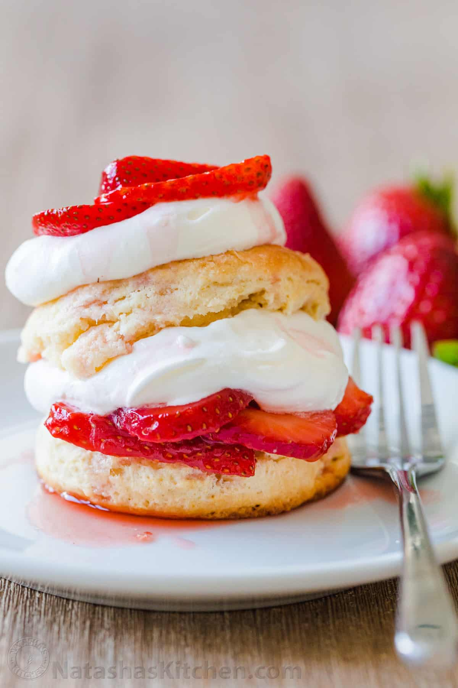

Strawberry Shortcake

Description
Strawberry shortcake consists of a sweet biscuit with a that is served with chopped strawberries in a sauce and with whipped cream.
It's rich, creamy, and crumbly--a great combination of textures.
Ingredients
- 2 pints strawberries
- 1/2 cup sugar
- 4 cups flour
- 3 tbsp sugar
- 1/4 tsp salt
- 5 tsp baking powder
- 1 1/4 cups butter
- 3 cups whipping cream
- 1/4 tsp vanilla extract
Instructions
- Hull and dice strawberries. Gently crush some of them to release juices, then mix them with the 1/2 cup of sugar.
- Preheat oven to 450 degrees.
- Mix together the flour, 3 tbsp of sugar, salt, and baking powder.
- Add 3/4 cup of butter, then 1 1/4 cups cream, then mix into dough.
- Knead the dough, then roll it out to a 1/2-inch thickness. Use a biscuit cutter to cut at rounds (biscuits).
- Use a dab of butter to lightly grease a baking sheet and the rounds. Bake for 10-15 minutes.
- Remove from oven, then pull shortcakes apart. Apply some butter again.
- Beat the cream, add vanilla, then beat again.
- Assemble shortcakes, strawberries, and whipped cream however you like!